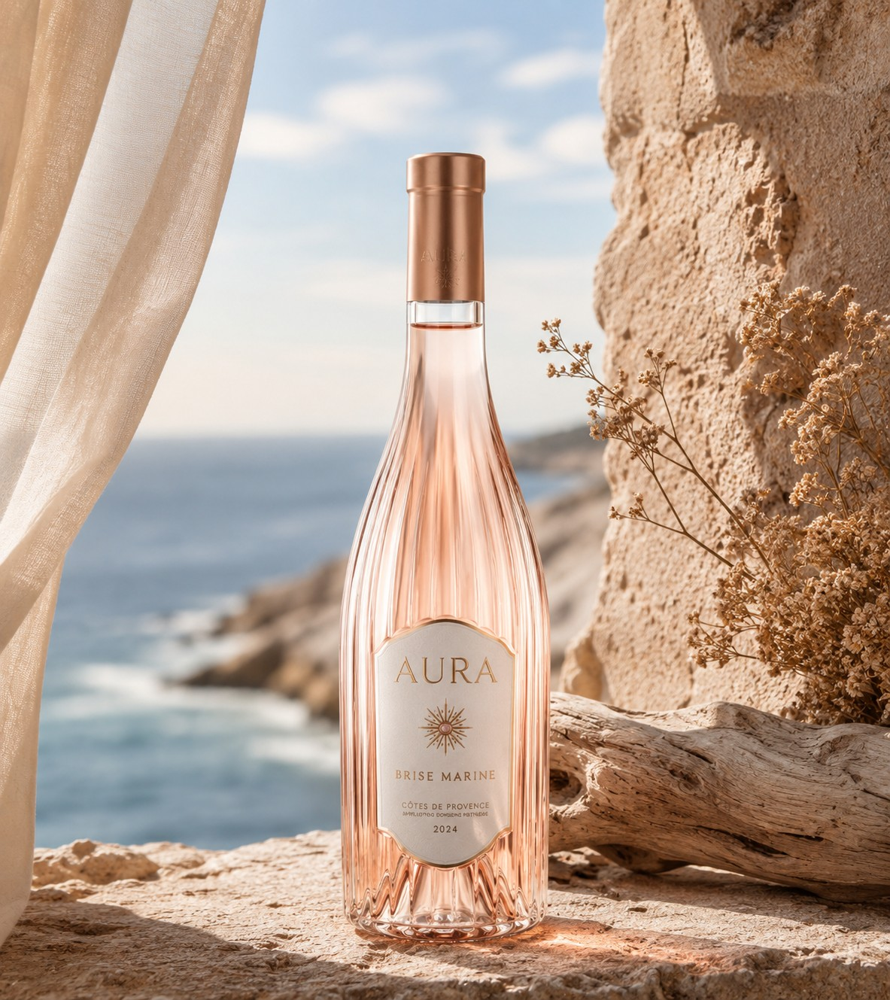
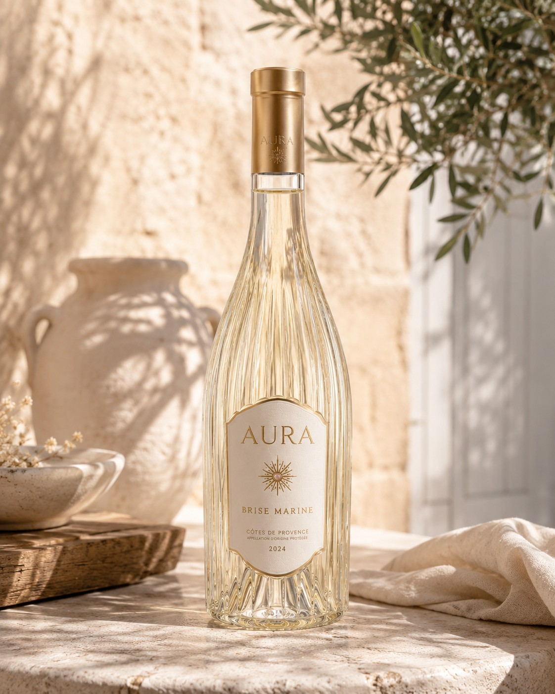
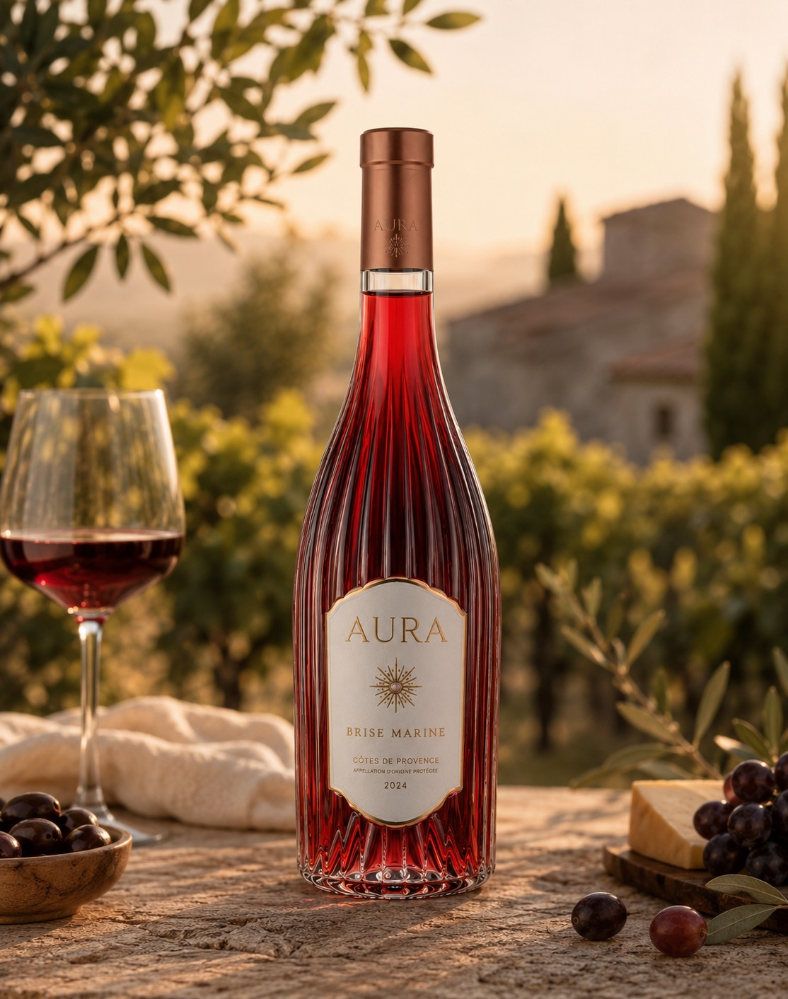
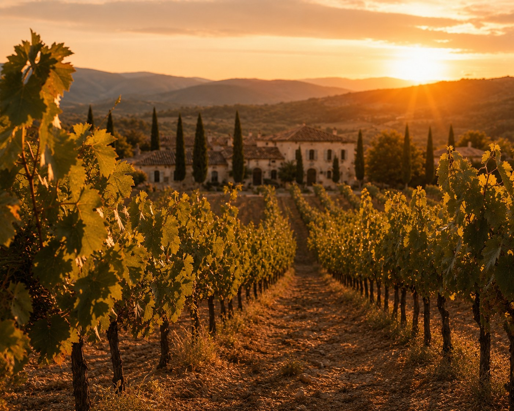
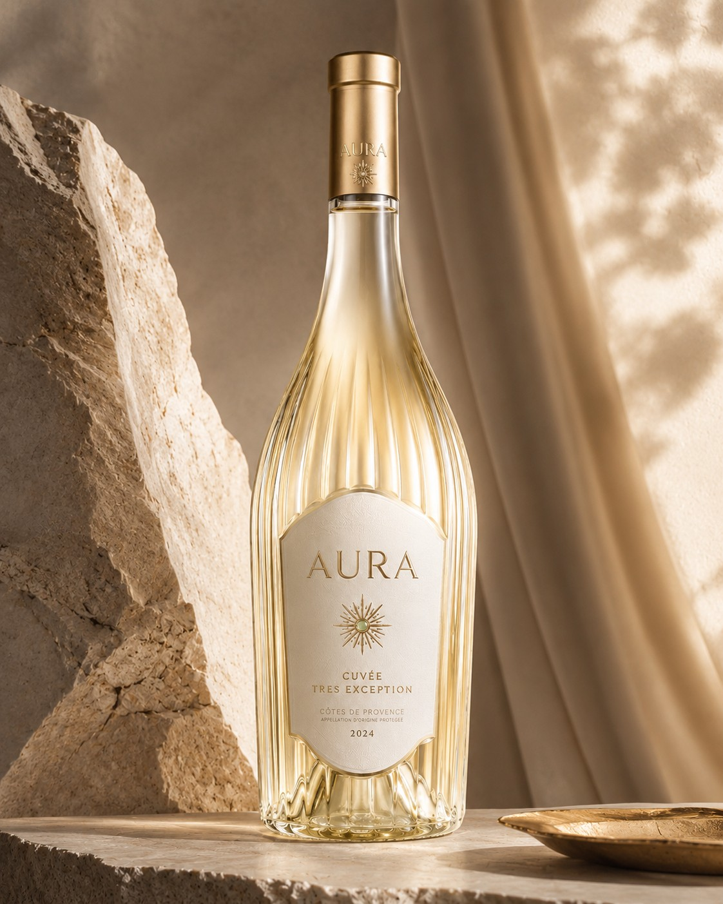
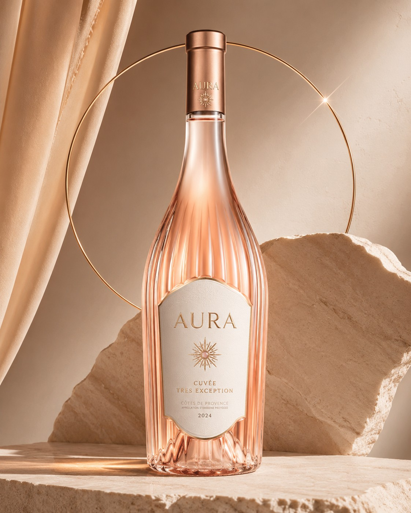
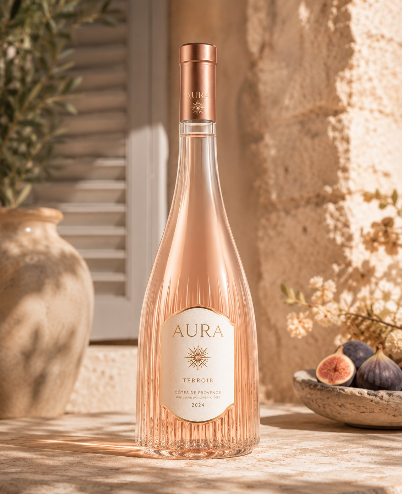
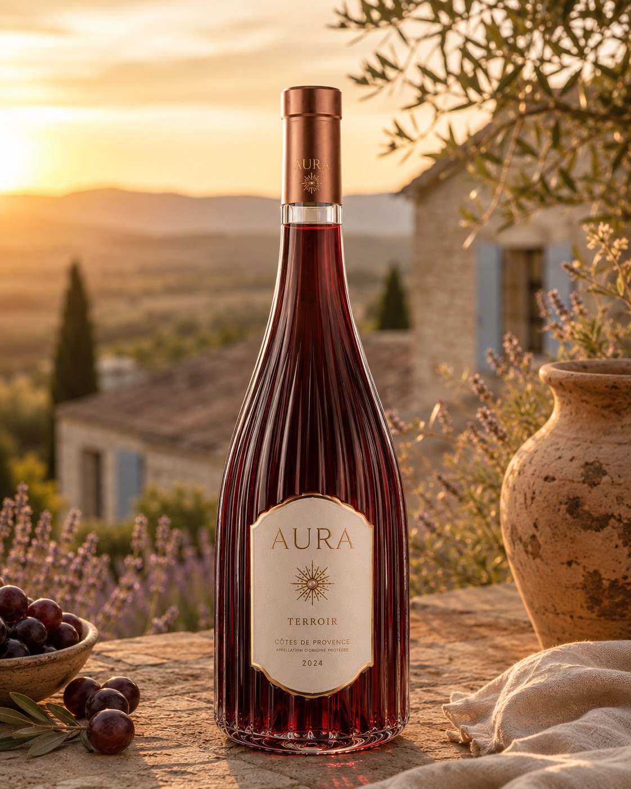

Brise Marine
19 €
La fraîcheur immédiate du Golfe, à ouvrir sans façon.
Ce site présente des boissons alcoolisées. Merci de confirmer votre date de naissance pour poursuivre.
L'abus d'alcool est dangereux pour la santé, à consommer avec modération. Conformément à la loi Évin, la vente d'alcool est interdite aux mineurs.

Côtes de Provence — Appellation d'Origine Protégée. Trois intensités de lumière, une même exigence de sobriété.
Découvrir la MaisonLa pièce rare de la maison. Production confidentielle, réservée aux tables et aux collections qui savent attendre.
AURA TRÈS — Rouge
Gibier, viandes braisées, fromages affinés.
79 € — 75clAURA TRÈS — Blanc
Crustacés, poissons nobles, cuisine iodée.
79 € — 75clAURA TRÈS — Rosé
Loup grillé, cuisine méditerranéenne, apéritif d'exception.
79 € — 75cl





19 €
La fraîcheur immédiate du Golfe, à ouvrir sans façon.



29 €
La précision d'un accord pensé pour la table.
Visite du chai, verticale de la Cuvée d'Exception, accord mets-vins avec notre sommelier — sur rendez-vous uniquement.
Réserver une expérience